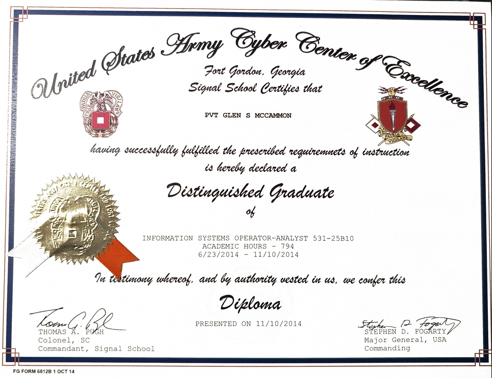
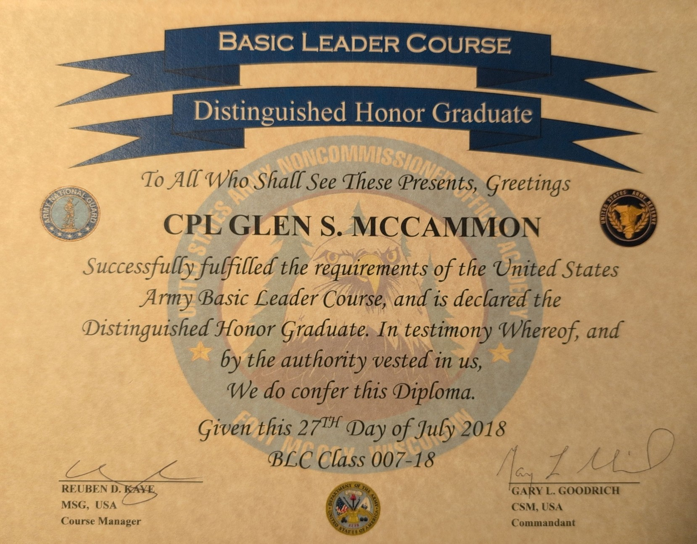
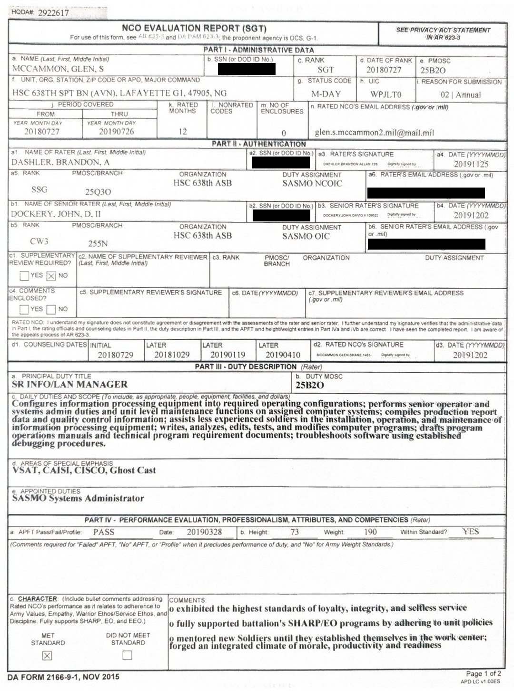
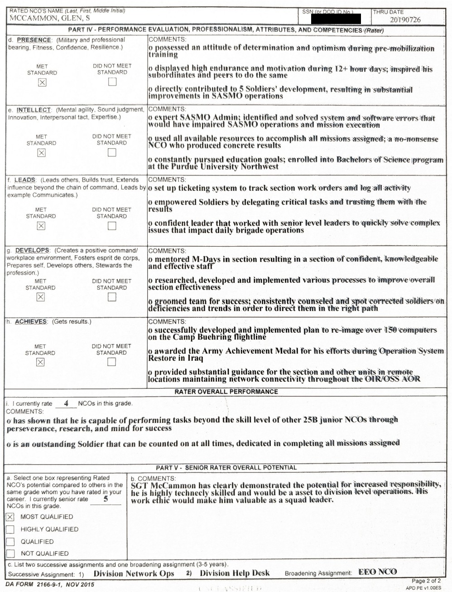
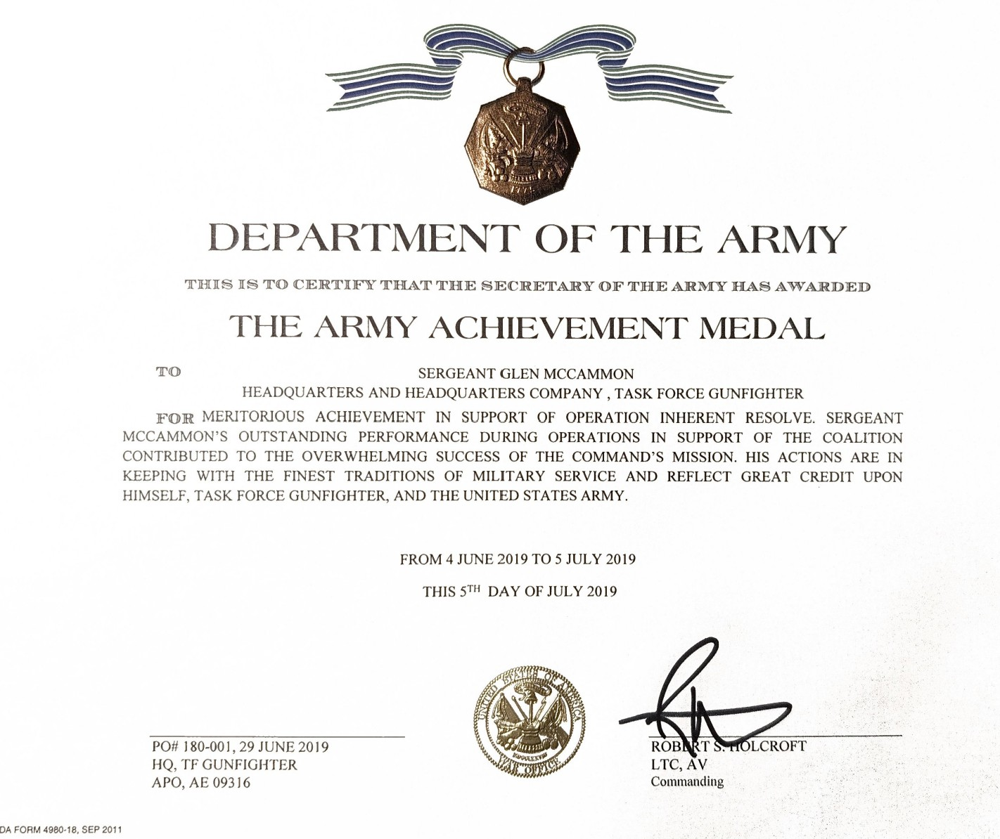
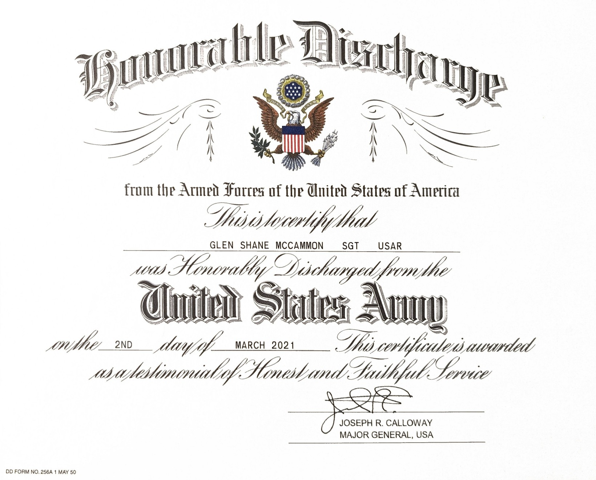

U.S. Army 2013 - 2021
I served in the Indiana Army National Guard for seven years, followed by one additional year in the Inactive Ready Reserve (IRR), and was honorably discharged at the rank of Sergeant (E-5). I began in a traditional drilling status and later supported multiple periods of active-duty service. My MOS designation was 25B (IT Specialist) but often found myself learning and expanding the scope of my duties whever I was. Throughout my career, I had the privilege of serving in a variety of roles and learning from exceptional leaders across several units, including:
- 2013–2014: Training
- 2014–2015: 76th Infantry Brigade Combat Team
- 2015–2016: 81st Troop Command
- 2016–2018: 219th Engineer Brigade
- 2018–2019: 38th Combat Aviation Brigade
- 2019–2020: 244th Expeditionary Combat Aviation Brigade (Deployment)
While not a complete list, below are some notable awards and achievements from my military career:
Distinguished Honor Graduate (2014) — Finished top of my class (~150 soldiers) for initial training of my MOS
Distinguished Honor Graduate (2018) — Finished top of my class (~100 soldiers) for basic leadership course, the required training to become a Non-Commissioned Officer (NCO).
NCO Evaluation Report (2018-2019) — Every year an NCO recieves an evaluation report. This was my first and only one which also spanned my deployment as my first year as an NCO was mostly spent on deployment. Among five other NCOs, I was rated "Most Qualified" for promotion by my Officer in Charge (CW3).
 Army Achievemnt Medal — Although this was not my highest-level award or my only Army Achievement Medal, this one holds significance to me because it was awarded to me while on deployment and while assisting a completely seperate unit who did not believe we would be able to assist. It was unexpected and it meant a lot to recieve.
Honorable Discharge
